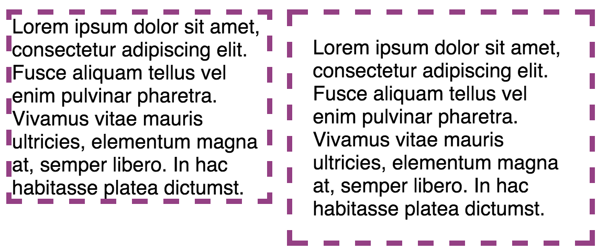

CSS Positioning: Padding vs. Border vs. Margin
Sunday, November 7, 2015
When looking at webpages have you ever noticed that some things have a colored border, space between the content and border, or space between a picture and paragraph? Well, using the CSS properties padding, border, and margin can help you do that.
The Box Model
Every HTML element you see on the page is treated as if it lives in its own box by the CSS box model, which the diagram below illustrates.

Inside every element you can have content such as a title or icon and it’s sized just enough to hold that content. To adjust the size you can set the dimensions by using the height and width properties. You can also control the appearance of the box by using the padding, border, and margin properties.
Padding
The space that surrounds the area between the content and border is called padding. You can choose to add padding to every side, one side, a few sides, or specify no amount at all. By specifying how much space should appear between the content and border you can make it easier for people to read the contents. As a result, when the padding is increased that value is added onto the width of the box.
